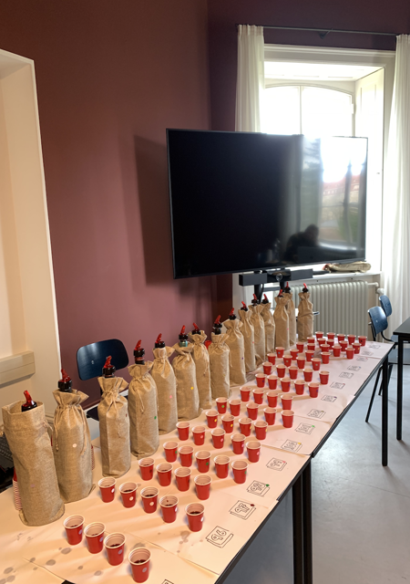
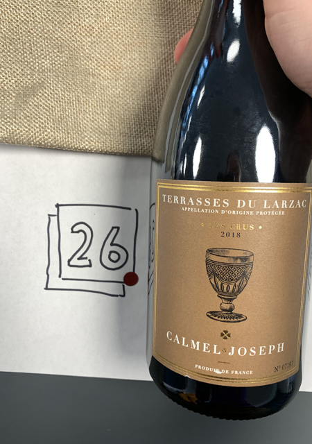
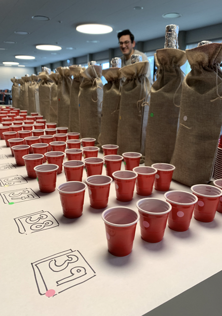
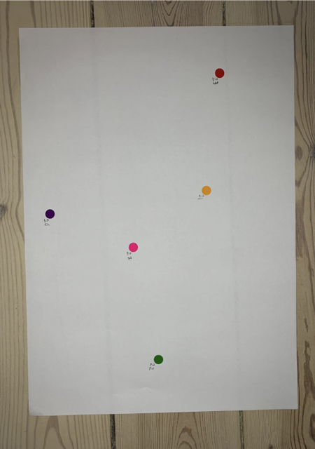
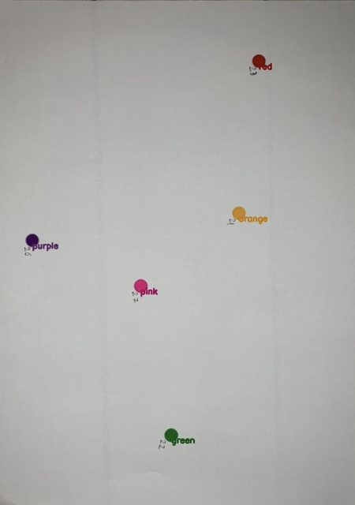

Learning to Taste üç∑: A Multimodal Wine Dataset
wget https://data.dtu.dk/ndownloader/articles/23376560/versions/1 -O WineSensed.zip

TL;DR: We present a large multimodal flavor dataset and propose to add flavor as a modality for multimodal representation learning.
Quick Jump:
- Data collection üë©‚Äçüíª
- Overview üëÄ
- Examples from WineSensed üßê
- Dataset file structure üíΩ
- Media coverage üóûÔ∏è
- Acknowledgements üôè
Data collection üë©‚Äçüíª
The annotations in WineSensed were collected through a series of wine-tasting events attended by a total of 256 non-expert wine drinkers. Most participants were between 21-25 years old, and more than half of them were from Denmark. The experiment was conducted in accordance with the ''De Videnskabsetiske Komiteer'' (e. the Danish ethics committee for science).

Anonymized wines, set up for a Napping-type data collection.

Each wine was labelled with a color and a number, and each participant was given a combination of wines to taste. In total, 108 different wines were used in the wine tastings.

The portions were 15 ml each, such that each participant could taste five different wines up to three times, and still consume less than two glasses of wine.
The participants were given instructions as to how to conduct the wine tasting, and palate cleansers were available.
We randomly selected 5 wines for the participants to taste. The participants did not have access to any information regarding the individual wines. The wine was poured into non-transparent shot glasses and the labels of the wines were covered during the entire experiment. The participants were instructed to put colored stickers (representing each of the five wines) on a sheet of paper based on their taste similarity, closer meaning more similar. The participants could repeat the process up to three times, ensuring they did not consume more than 225 ml of wine. The average participant repeated the experiment two times.

An unprocessed sample sheet with colored stickers representing the relative positions of the five different wines in the sample.

The corners of the sample sheet have been detected and used to perform perspective warping in order to correct for the angle and distance of the camera.

Blob detection has been performed on the perspective-corrected sample sheet and the color of each blob classified.
The Euclidean distance between each pair of labels is calculated.
We automatically digitized the participants' annotations by taking a photo of each filled-out sheet. We used the Harris corner detector to find the corners of the paper and a homographic projection to obtain an aligned top-down view of the paper. The images were mapped into HSV color space and a threshold filter applied to find the different colored stickers that the participant used to represent the wines. Having identified the location, we computed the Euclidean pixel-wise distance between all pairs of points, resulting in a distance matrix of wine similarities.
Examples from WineSensed üßê
Images ü§≥
Reviews ✍️
Good wine, would be a 4 ⭐️ but for a touch of sweetness on the palate. Merlot from Puglia providing notes of red plum, raspberry, strawberries, red cherries, violet, stone, earthy, minerality, coffee and thyme. Med+ acidity, med- racy tannins, med+ body, high abv and a med+ finish
Clear, garnet-red in glass, with lila rim.
On the nose red berries like cranberry, raspberry, cowberry; roast notes like chocolate, forest floor, vinegar, hints of coffee and leather.
Pretty shallow for Lodi in the palate, though juicy, with kind of citric acidity and gentle, soft tannins.
Lingering raspberry and orange finish.
Interesting primitivo from the States called Zin üòÑüòâ. Strong nose of blackcurrant jam, oak and black fruit.
Similar on the palate with strong black fruit, plum and cassis with spicy notes of pepper and licorice. Strong alcohol 14
.5% and it's noticable. Grape juice on dope üòÑ
Elegant Bordeaux blend,
Silky, complex
Oak, black fruit, earthy, hint of spice
Lingering taste on the palate
Heel lekker!
Still as good as the last time I had it just a month ago. Hint of barnyard and t
ouch more herbaceous this time. Let it breathe and the acid and tannins pick up providing more structure. Shared it wit
h my budding wino sisters and they loved it
Edit, vacuum pumped for three days and now it's very leafy and mushroom. Smells great but falling apart a bit on the pal
ate
This is a rich, dense red with notes of cigar box, wild berries and cassis. There
are layers of richness and beautifully put together tannins. This is a wine of the future. Drink from 2026.
First vintage for this winery, and this cab franc blend shows a lot of complexity
. plum oak and leather. Very good, and picked up a second bottle for later to see how it evolves.
Decanted 30 minutes. Bordeaux blend of cabernet franc, merlot, and cabernet sauvi
gnon. Medium ruby to garnet colour on the glass. On the nose, forest floor and pencil shavings. On the palate, the textur
e is buttery giving way to red cherries, a bit of herbaceous bitterness like bell pepper which dissipated once the wine o
pened up. Still a few years ahead of its prime. Cheers!
Attributes üìä
year: 2019
winery ID: 7875
alc%:
country: United States
region: Lodi
price: 8.84
rating: 3.8
grape: Zinfandel
year: 2020
winery ID: 171548
alc%: 14
country: Italy
region: Puglia
price: 13.71
rating: 4.0
grape: Merlot
year: 2020
winery ID: 6900
alc%: 14
country: Italy
region: Puglia
price: 6.57
rating: 4.1
grape: Negromaro
year: 2018
winery ID: 247928
alc%:
country: South Africa
region: Stellenbosch
price: 28.28
rating: 4.3
grape: Cabernet Franc
year: 2010
winery ID: 15240
alc%: 15
country: Spain
region: Rioja Alta
price: 22.26
rating: 4.3
grape: Tempranillo
year: 2019
winery ID: 27203
alc%:
country: United States
region: California
price: 10.5
rating: 3.9
grape: Zinfandel
Dataset file structure üíΩ
The dataset contains the file
metadata.zip, consisting of the files
participants.csv, which contains information connecting participants to annotations in the experiment,
images_reviews_attributes.csv, which contains reviews, links to images, and wine attributes, and
napping.csv, which contains the coordinates of each wine on the napping paper alongside information connecting each coordinate pair to the wine being annotated and the participant who annotated it. The
chunk_<chunk num>.zip folders contain the images of the wines in the dataset in
.jpg format.
napping.csv contains the following fields:
- session_round_name: session number during the event_name, at most three sessions per event (maps to experiment_round in participants.csv)
- event_name: name of the data collection event (maps to the same attribute in participants.csv)
- experiment_no: which number the napping paper was in the list of papers returned for this session_round_name (maps to experiment_no in participants.csv)
- experiment_id: id the wine being annotated was given in the experiment
- coor1: x-axis coordinate on the napping paper
- coor2: y-axis coordinate on the napping paper
- color: color of the sticker used
participants.csv contains the following fields:
- session_round_name: session number during the event_name, at most three sessions per event (maps to experiment_round in napping.csv)
- event_name: name of data-collection event (maps to event_name in napping.csv)
- experiment_no: which number the napping paper was in the list of papers returned for this session_round_name (maps to experiment_no in napping.csv)
- round_id: round number (from 1-3)
- participant_id: id the participant was given in the experiment
images_reviews_attributes.csv contains the following fields:
- vintage_id: vintage id of the wine
- image: image link (each .jpg in chunk_<chunk num>.zip can be mapped to a corresponding image link in this column by removing the /p prefix from the link).
- review: user review of the wine
- experiment_id: id the wine got during data collection (each experiment_id can be mapped to the same column in napping.csv)
- year: year the wine was produced
- winery_id: id of the winery that produced the wine
- wine: name of the wine
- alcohol: the wine's alcohol percentage
- country: the country where the wine was produced
- region: the region where the wine was produced
- price: price of the wine in USD (collected 05/2023)
- rating: average rating of the wine (collected 05/2023)
- grape: the wine's grape composition, represented as a comma-separated list ordered in descending sequence of the percentage contribution of each grape variety to the overall blend.